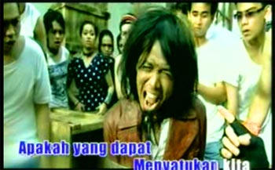

Introduce
Dangdut is the Music of My Country
Bhinneka Tunggal Ika is the national motto of Indonesia. In a country of over 220 million people and over 300 ethnic groups, not to mention the different age groups and socio-economic situations, it is a very apt motto to have. Kesatuan dan persatuan has become another catch-phrase in Indonesia, but how do you unite such a diverse range of peoples? The founders of Indonesia identified language as one of the key factors, but the popular comedy band Project Pop had a different answer.
Reproduced with the permission of Project Pop and Musica Studios.
In 2005 Project Pop’s song ‘Dangdut is the Music of My Country’ rocked Indonesia, mixing humour with politics, metal with dangdut. Music has strong links with politics and identity all over the world, and Indonesia is no exception. This song is a starting point for exploring the Indonesian music scene and identity in Indonesia. The focus in this section is on ethnic identity and describing people physically. Later, you will explore the fusion of fashion and identity.
You will develop your understanding of different identity groups in Indonesia, and learn to describe people physically. This gives you a basis for extending your language skills to other types of description. It will also help you understand the interrelationship between language and culture.
You will:
- view the video clip of Dangdut is the Music of My Country and complete some activities to help you understand it
- learn more about the Indonesian music scene and the link between politics and music
- learn more about decoding Indonesian words, including affixed words and bahasa gaul
- describe people in terms of ethnic identity and physical appearance
- understand how describing people is culturally determined
- consider the idea of ‘unity in diversity’ in a creative way.
Print out the kartu kemajuan to track your progress as you go through this section of work. You should also save it in a folder on your computer.
It should take you approximately seven hours to complete this section.